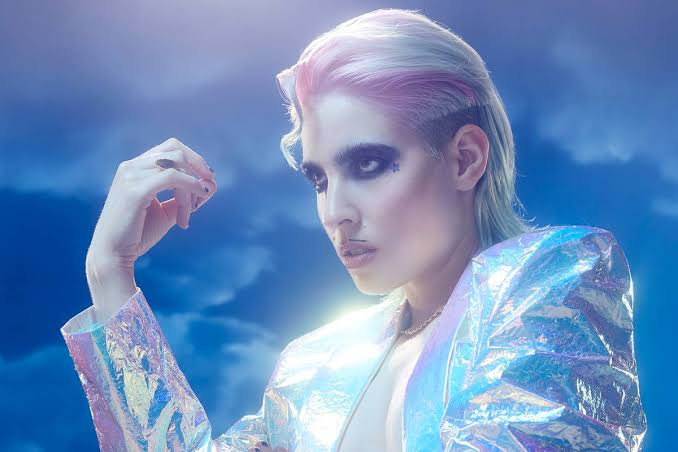

The World of Dorian Electra

Dorian Electra Fridkin Gomberg, known professionally by their stage name of Dorian Electra, is an American singer and songwriter who has heavily led and influenced the modern hyperpop music genre. Electra is best known for their music which confronts ideas regarding gender, masculinity, capitalism, fame, and subcultures on the internet. Their pronouns are they/them.
With a vast discography beginning in the early 2010s, Electra's work greatly varies in sound. Electra's musical palette can range from unpredictable and chaotic electronic instrumentals, futuristic-sounding conventional pop melodies, to sparse deconstructed club beats. With Electra's additional focus on high-quality music videos, Electra's work focuses on visuals just as much as audio. Having gained a footing in their career from early philosophical/economic-related educational music videos, they later expanded their work to become the star they are today. Dorian Electra continues to distinguish themselves as an extremely innovative artist today.
What's to Discover
This website discusses Dorian Electra's creative evolution. You can browse the following pages:
- Discography & Eras: An overview on Electra's studio albums alongside the evolution of their music.
- Visual Aesthetics & Themes: An analysis of Electra's innovative fashion, drag-inspired personas, and their thematic relation to internet culture.
The Key Elements of Electra's Style
- Hyperpop: Electra is a pioneer of the hyperpop music genre, which utilizes heavy pitch-shifted vocals, metallic synthesizers, and genre-warping production.
- Drag Performance & Fashion: As a non-binary musician, Electra fights gender norms, having their fashion on a spectrum between hyper-masculinity and hyper-femininity.
- Social Commentary & Satire: Electra addresses niche topics in internet subcultures, using it as criticism against the expectations of society, politics, and other online cultures, sometimes in satirical fashion.